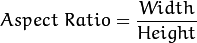
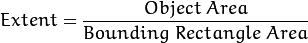
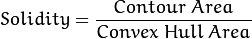
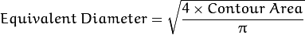

Here we will learn to extract some frequently used properties of objects like Solidity, Equivalent Diameter, Mask image, Mean Intensity etc. More features can be found at Matlab regionprops documentation.
(NB : Centroid, Area, Perimeter etc also belong to this category, but we have seen it in last chapter)
It is the ratio of width to height of bounding rect of the object.

x,y,w,h = cv2.boundingRect(cnt)
aspect_ratio = float(w)/h
Extent is the ratio of contour area to bounding rectangle area.

area = cv2.contourArea(cnt)
x,y,w,h = cv2.boundingRect(cnt)
rect_area = w*h
extent = float(area)/rect_area
Solidity is the ratio of contour area to its convex hull area.

area = cv2.contourArea(cnt)
hull = cv2.convexHull(cnt)
hull_area = cv2.contourArea(hull)
solidity = float(area)/hull_area
Equivalent Diameter is the diameter of the circle whose area is same as the contour area.

area = cv2.contourArea(cnt)
equi_diameter = np.sqrt(4*area/np.pi)
Orientation is the angle at which object is directed. Following method also gives the Major Axis and Minor Axis lengths.
(x,y),(MA,ma),angle = cv2.fitEllipse(cnt)
In some cases, we may need all the points which comprises that object. It can be done as follows:
mask = np.zeros(imgray.shape,np.uint8)
cv2.drawContours(mask,[cnt],0,255,-1)
pixelpoints = np.transpose(np.nonzero(mask))
#pixelpoints = cv2.findNonZero(mask)
Here, two methods, one using Numpy functions, next one using OpenCV function (last commented line) are given to do the same. Results are also same, but with a slight difference. Numpy gives coordinates in (row, column) format, while OpenCV gives coordinates in (x,y) format. So basically the answers will be interchanged. Note that, row = x and column = y.
We can find these parameters using a mask image.
min_val, max_val, min_loc, max_loc = cv2.minMaxLoc(imgray,mask = mask)
Here, we can find the average color of an object. Or it can be average intensity of the object in grayscale mode. We again use the same mask to do it.
mean_val = cv2.mean(im,mask = mask)
Extreme Points means topmost, bottommost, rightmost and leftmost points of the object.
leftmost = tuple(cnt[cnt[:,:,0].argmin()][0])
rightmost = tuple(cnt[cnt[:,:,0].argmax()][0])
topmost = tuple(cnt[cnt[:,:,1].argmin()][0])
bottommost = tuple(cnt[cnt[:,:,1].argmax()][0])
For eg, if I apply it to an Indian map, I get the following result :